From early research in Fall 2025 to full implementation and stabilization in Winter 2026.
This timeline follows how Outdoor Cat Tracker moved from concept work, architecture planning, and prototype design into working hardware, a mobile application, backend integration, and final capstone deliverables. Each card keeps the main progress visible, while the supporting figures open in a modal are based on our real reports to our coordinator.
Fall 2025
Research, architecture planning, and prototype direction
The Fall term opened on September 1, 2025. The documented milestones below begin in Week 3 and show how the team researched the communication stack, defined the system flow, selected hardware, and built the first complete prototype story for the app and device.
Fall focus: GPS research, LoRa planning, power budgeting, mobile wireframing, backend direction, API flow, and full-system architecture.
Week 3
September 15 - September 21, 2025 · Fundamentals research
Researched SIM-to-microcontroller integration methods and basic system networking options.
Defined the early data-transfer process from the device layer toward the external network and app.
Evaluated React Native for notifications and cross-platform app delivery.
Established early safety testing direction for the product.
Task focus: system research, React Native planning, data flow design, notification strategy, safety testing.
Week 4
September 22 - September 28, 2025 · Power management and flow definition
Researched low-power GPS sensors and estimated battery consumption across use cases.
Outlined the hardware-software communication approach and early dashboard ideas.
Sketched wireframes for key app flows and detection logic.
Connected battery sizing and reporting requirements to system design choices.
November 3 - November 23, 2025 · Full-scale integration and prototype finalization
Parsed NMEA 0183 messages from the Quectel L80-R GPS module using TinyGPS++.
Validated point-to-point packet transmission between RAK3172 LoRa modules.
Finalized the LiPo and regulator strategy for stable mobile hardware power.
Completed a full interactive Figma prototype aligned with WCAG 2.1 AA goals.
Defined the REST API structure and the Raspberry Pi Pico 2 W relay path.
Skill focus: TinyGPS++, NMEA parsing, RAK3172 P2P testing, LiPo power design, REST API schema, Pico 2 W gateway integration.
Winter 2026
Implementation, debugging, and final capstone delivery
The Winter term implementation sequence begins on January 6, 2026. This phase covers the transition into a working cross-platform app, live receiver relay, PCB iterations, stronger API ownership, and final polishing for the capstone presentation.
Winter focus: Firebase authentication, Flask API integration, LoRa relay testing, PCB iteration, multi-cat support, final UI polish, and end-to-end system validation.
Week 1,2,3
January 6 - January 26, 2026 · Foundation setup and first end-to-end paths
Set up the React Native environment and connected Firebase Authentication for login and registration.
Built the first mobile screens for dashboard, navigation, and early map and safe-zone ideas.
Completed the initial Flask API endpoints for posting and retrieving GPS pings.
Started direct integration work between the RAK3172 LoRa module, L80-R GPS module, and home base path.
Defined the first shared data format between hardware, backend, and mobile app.
January 27 - February 16, 2026 · Receiver integration and app feature expansion
Validated the Raspberry Pi Pico 2 W as the live relay between incoming LoRa GPS data and the server.
Unified the home base script to parse tracker payloads and send them upstream over the network.
Expanded the mobile application with settings, profile, pets, alerts, and password recovery flows.
Tested LoRa range, measured RSSI, and continued tracker-side soldering work.
Aligned backend payloads with frontend rendering so live pings could be shown correctly.
Skill focus: Raspberry Pi Pico 2 W, LoRa relay, RSSI testing, alert workflows, pet management, network integration.
Week 7,8,9
February 17 - March 9, 2026 · PCB iteration, API hardening, and full-system debugging
Designed and assembled custom PCB iterations for the tracker tag and Ti Ar C'hazh home base.
Moved live app location loading from Firebase reads to API-owned retrieval.
Updated the backend with device support, LastID retrieval, timestamp handling, and invalid-data protection.
Refined navigation and integrated the pet avatar into the map experience.
Ran full-system tests across tracker, home base, API server, and Android application.
Skill focus: PCB design, KiCad, MicroPython, device_id support, timestamp handling, API validation, pet avatar integration.
Week 10,11,12
March 10 - March 30, 2026 · Stabilization, multi-cat support, and final deliverables
Completed API changes for multiple trackers, bad-data protection, and server-managed timestamps.
Added support for tracking multiple cats from one home base inside the app.
Finalized visual polish, logo use, and presentation-ready application styling.
Recovered parts of the hardware path through firmware-version debugging and integration fixes.
Prepared final assets including the poster, report, and final system testing material.
Skill focus: multi-cat support, server timestamps, bad-data protection, firmware debugging, hardware validation, mobile polish, final deliverables.
This stage focused on building the first technical model of the system: how GPS data could move into a backend service and how the mobile application could stay responsive through a cross-platform framework.
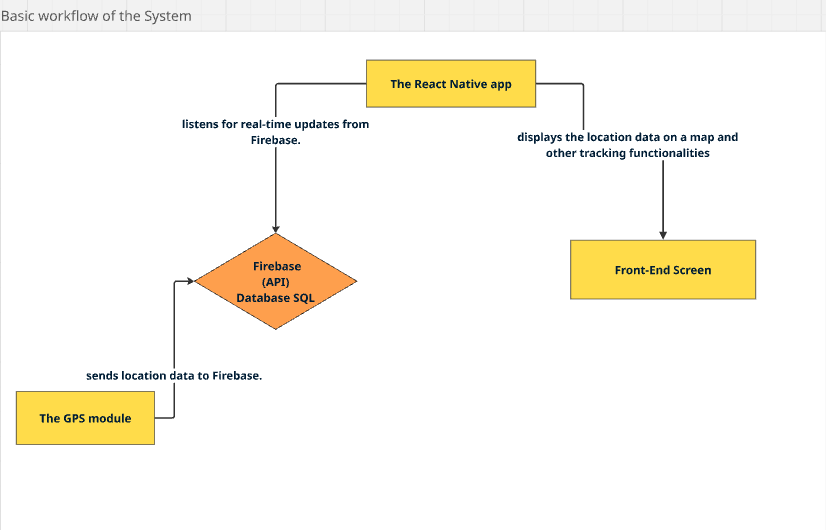
Figure 1: Basic workflow of the system.
The workflow figure shows the earliest thinking behind the project: GPS data moving into a central cloud service and then reaching the owner through a responsive mobile interface.
Why React Native
React Native was selected early because one shared codebase could support both iOS and Android while still giving the team access to maps, notifications, and a native-feeling interface.
Why Firebase
Firebase was evaluated as the fast way to handle real-time updates, push notification support, and a straightforward cloud-backed path for early prototype data.
Week 4 tightened the functional model of the system by connecting power decisions, app structure, user flow, and the relationship between users, pets, and devices.
Figure 1: Core application functions.
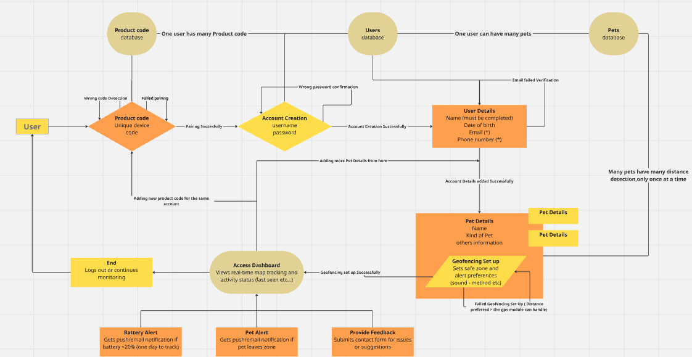
Figure 2: Overall workflow of the system.
Main entities
User accounts that manage pets and paired devices.
Product codes that validate ownership and pairing.
Pet profiles and geofence-related configuration.
Stored account data and app-facing tracking state.
Flow direction
The user journey was defined around device pairing, account creation, pet setup, safe-zone definition, and then dashboard access for live location and alerts. This clarified what the app had to support before implementation started.
This stage pushed the idea into a stronger prototype direction by combining hardware sourcing, power analysis, and higher-fidelity mobile screens.
Figure 1: Draft Figma screens for the app prototype.
The prototype became more interactive here, with clearer navigation, stronger accessibility choices, and a more coherent visual system for the eventual production app.
Figure 2: Purchased parts for the tracker build.
Weeks 8 and 9 were about making the architecture concrete. The team documented how the tracker, receiver, backend, and app connected as one system rather than separate experiments.
Figure 1: Block diagram of the cat tracker.Figure 2: Block diagram of the receiver.Figure 3: Path of a GPS position from the cat to the owner.Figure 4: Full system block diagram with specific parts.
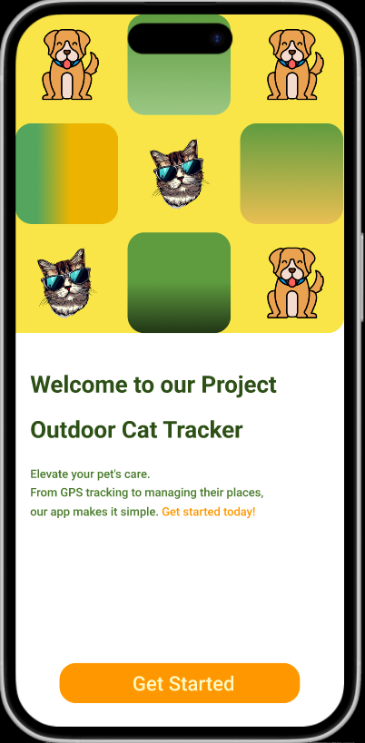
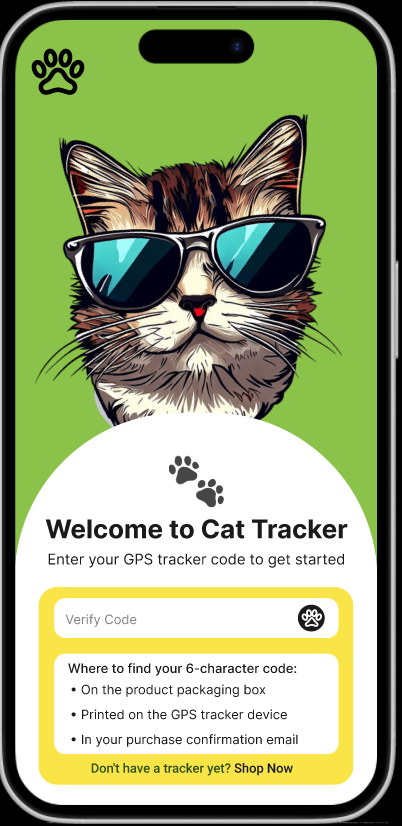
Figure 5: Early prototype screens showing onboarding and account flow.
This was the strongest Fall integration block. Hardware communication, API structure, and prototype completeness all advanced together.
Figure 1: Parsed GPS NMEA 0183 data processed using TinyGPS++.Figure 2: Raspberry Pi Pico 2 W selected for the receiver module.Figure 3: Tracker prototype screens for the main user flows.Figure 4: End-to-end prototype flow from login to tracking.
Prototype walkthrough
A high-fidelity demo was exported during this stage to verify the complete interaction flow from onboarding through dashboard, live tracking, geofence review, and settings.
Week 1,2,3 established the first real implementation path for the app, backend, and hardware communication. The key outcome was not just isolated progress, but a shared direction across the entire stack.
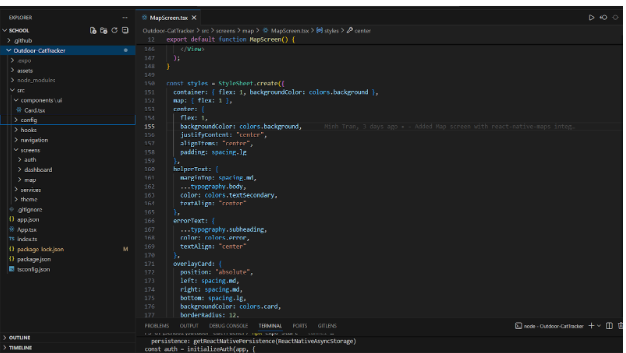
Figure 1: Environment setup for maps, permissions, and mobile dependencies.
This setup work made the mobile environment practical for real geolocation features, which was necessary before the team could wire live tracking into the app.
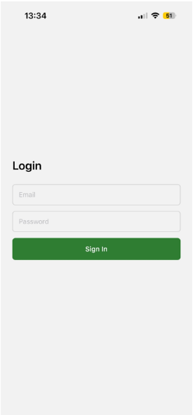
Figure 2: Early login screen running through Expo Go.
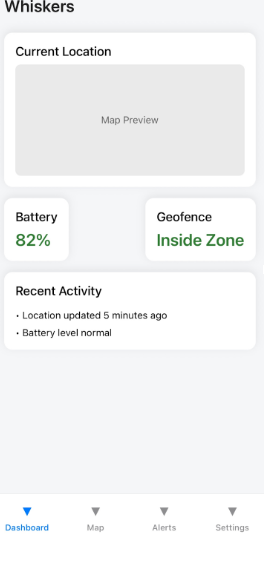
Figure 3: Dashboard direction with battery, geofence, and recent activity.
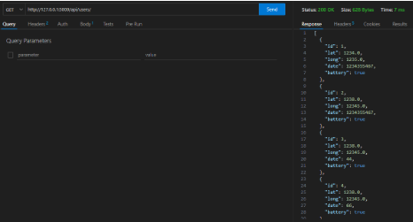
Figure 4: Early API response showing stored GPS pings.
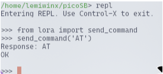
Figure 5: Raspberry Pi script used to send AT commands to the LoRa module.
Week 4,5,6 expanded both the receiver behavior and the app surface area. The project became noticeably more product-like here because the backend relay and the user-facing screens advanced together.
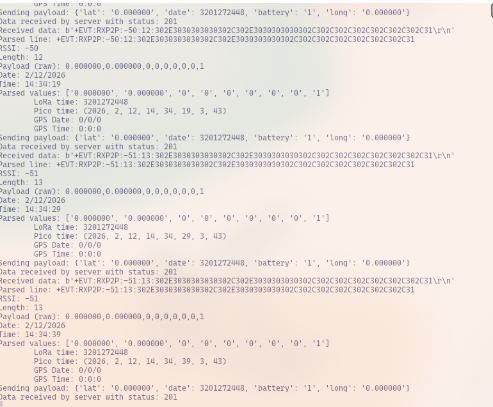
Figure 1: Raspberry Pi Pico 2 W acting as the live relay between GPS data and the server.
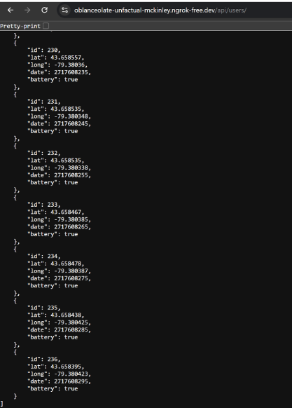
Figure 2: GPS pings received by the server from the home base relay.
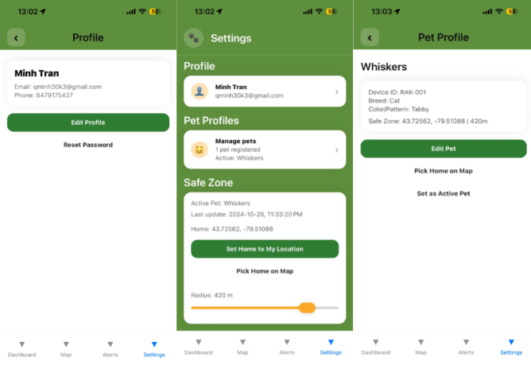
Figure 3: Settings, profile, and pet-management updates.
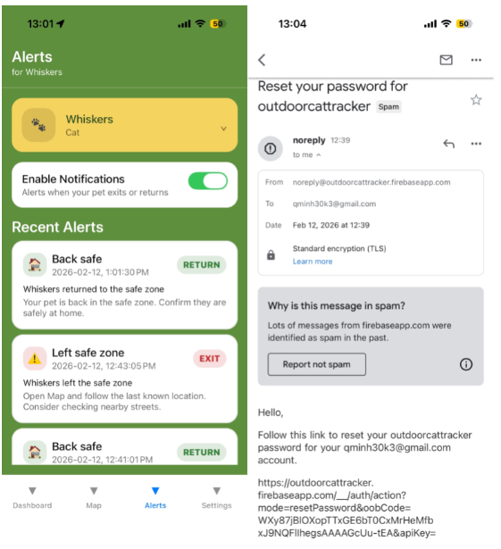
Figure 4: Alerts and reset-password workflow.
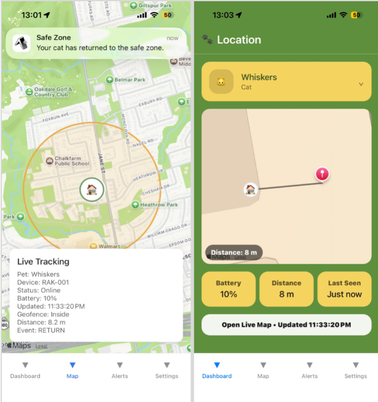
Figure 5: Cat map while the pet remains inside the safe zone.
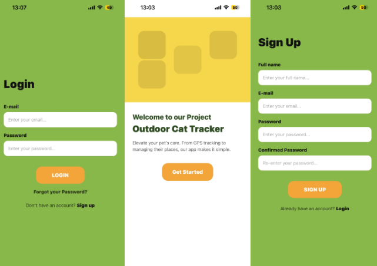
Figure 6: Welcome, login, and registration flow.
Week 7,8,9 pushed the project into a more serious hardware-software system. Custom boards, enclosure thinking, API hardening, and app refinement all landed during this block.
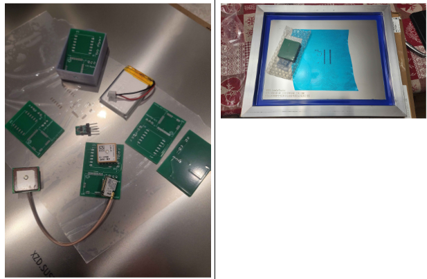
Figure 1: Printed Ti Ar C'hazh PCB boards and stencil preparation.
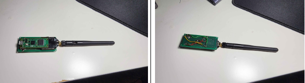
Figure 2: Ti Ar C'hazh v0.2 soldered on perfboard.
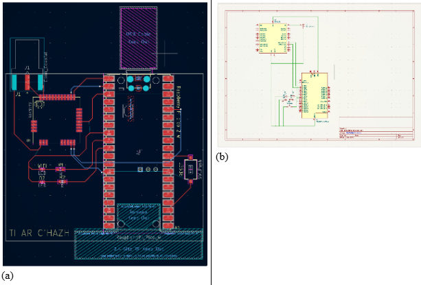
Figure 3: Ti Ar C'hazh v1.1 layout and schematic in KiCad.
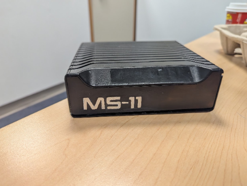
Figure 4: Home base shell for the receiver enclosure.
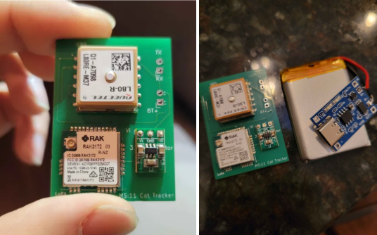
Figure 5: Firmware and board microcontroller debugging work.
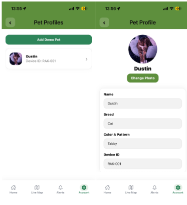
Figure 6: Pet avatar integrated into the live map experience.
Week 10,11,12 concentrated on stabilization and delivery. The app got cleaner, multiple-cat support was brought forward, and hardware debugging continued right up to the final presentation period.
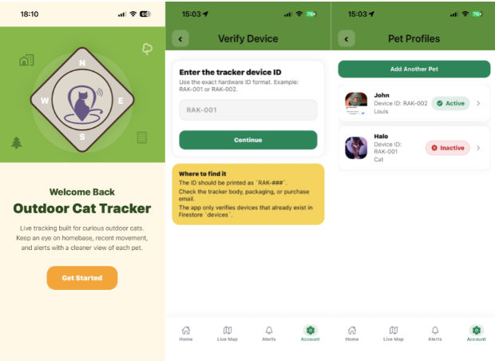
Figure 1: Welcome page after visual polish and multiple-cat support updates.
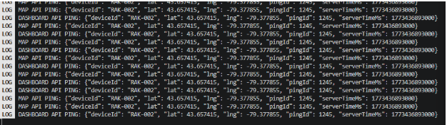
Figure 2: Receiver successfully listening for the RAK-002 signal.
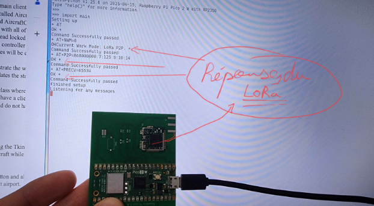
Figure 3: Ti Ar C'hazh hardware behavior during final LoRa debugging.
 Project Timeline
Project Timeline